Visual Studio Code Development¶
This describes how to development C++ applications in the MLTK using Microsoft Visual Studio Code.
Using this guide, you can build C++ applications for Windows/Linux or supported embedded platforms.
NOTES:
All of the MLTK C++ source code may be found at: mltk repo/cpp
Internally, VSCode uses CMake to build the applications
Refer to the example applications or Python wrappers documentation for more details about what comes with the MLTK
Alternatively, applications may be built for Silicon Lab’s embedded targets using Simplicity Studio
Install Tools¶
First, we need to install a few tools:
0) Setup OS¶
If you’re on Windows, enable long file paths: https://learn.microsoft.com/en-us/windows/win32/fileio/maximum-file-path-limitation?tabs=registry
Also install the Visual Studio C++ compiler (this is needed to build some of the 3rd party Python packages for Python 3.10): https://visualstudio.microsoft.com/visual-cpp-build-tools/
Be sure to check the Desktop Development with C++ workload in the installer GUI.
If you’re on Linux, run the following command to install the necessary packages:
sudo add-apt-repository -y ppa:ubuntu-toolchain-r/test
sudo add-apt-repository -y ppa:deadsnakes/ppa
sudo apt update
sudo apt-get -y install build-essential g++-9 cmake ninja-build gdb p7zip-full git-lfs python3-dev python3-venv libusb-1.0-0 libgl1
1) Install CMake¶
CMake is a build system utility used to build the C++ applications.
Install CMake and ensure it is available on the command PATH
More details here: https://cmake.org/install
2) Install 7-Zip¶
7-Zip is a file archiver with a high compression ratio.
Several of the assets downloaded by the MLTK are compressed in this format.
More details here: https://www.7-zip.org/download.html
3) Install Python¶
Install Python 3.7, 3.8, 3.9 or 3.10 64-bit and ensure it is available on the command PATH
More details here: https://www.python.org/downloads
4) Install Segger GDB Debug Server¶
While not required, this is used to single-step debug an embedded development board.
If you’re only build for Window/Linux then you can skip this step.
Download and install the J-Link Software Pack:
https://www.segger.com/downloads/jlink/#J-LinkSoftwareAndDocumentationPack
If using Windows, select the 64-bit installer:
https://www.segger.com/downloads/jlink/JLink_Windows_x86_64.exe
5) Install a Serial Terminal¶
While not required, this is used to view the serial logs from an embedded development board. If you’re only build for Window/Linux then you can skip this step.
The Serial Monitor VSCode extension is recommended:
Works well
Directly integrates with VSCode
Developed by Microsoft
Another option for Windows is TeraTerm which is a free serial terminal.
6) Install GIT¶
If necessary, install Git:
https://git-scm.com/downloads
7) Windows: Install the C++ Redistributable Package¶
If you’re using Windows, install the Microsoft Visual C++ Redistributable for Visual Studio 2015, 2017 and 2019 which is required by Tensorflow
Install MLTK¶
Next, we need to install the MLTK:
1) Clone the MLTK repository¶
# Clone the MLTK GIT repository
git clone https://github.com/siliconlabs/mltk.git
Then navigate to the MLTK repository directory
cd mltk
2) Run the install script¶
python .\install_mltk.py
python3 ./install_mltk.py
3) Activate the MLTK Python virtual environment¶
Activate the MLTK’s Python virtual environment:
.\.venv\Scripts\activate.bat
source ./.venv/bin/activate
After activation, the mltk command should be available on the command-line:
mltk --help
VSCode Setup¶
With the MLTK installed, let’s get Visual Studio Code setup.
1) Install VSCode¶
Download and install Visual Studio Code
2) Open the MLTK VSCode workspace¶
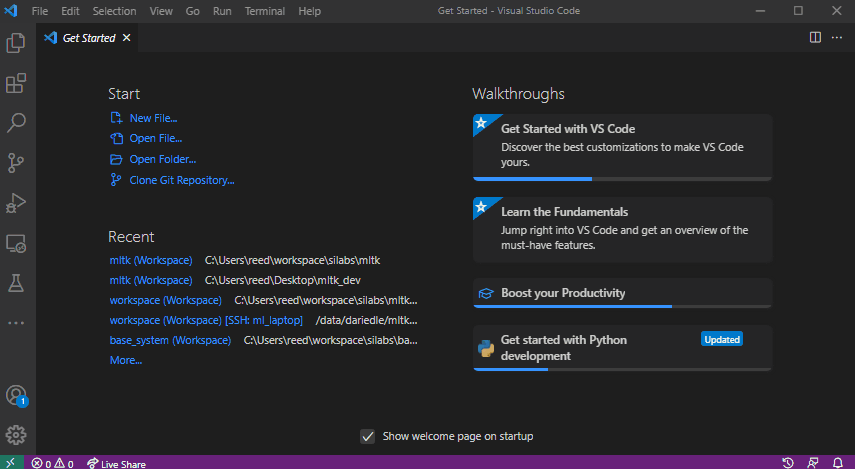
3) Install the recommended extensions¶
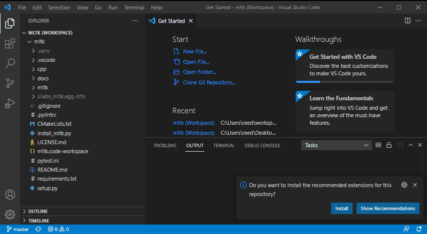
OR
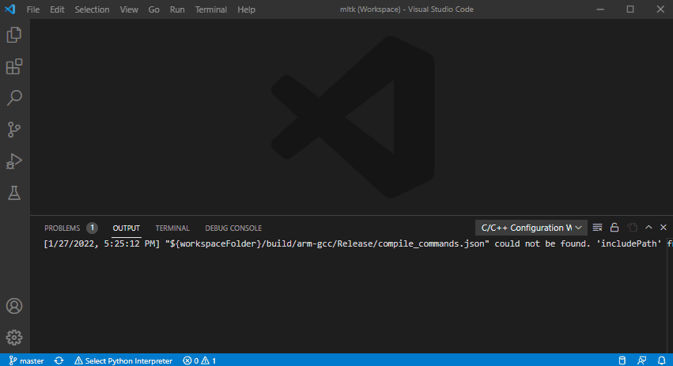
4) Select the Python Interpreter¶
Select the MLTK virtual environment’s Python interpreter.
It has the similar to:
<mltk dir>\.venv\Scripts\python.exe <-- Windows
<mltk dir>/.venv/bin/python3 <--- Linux
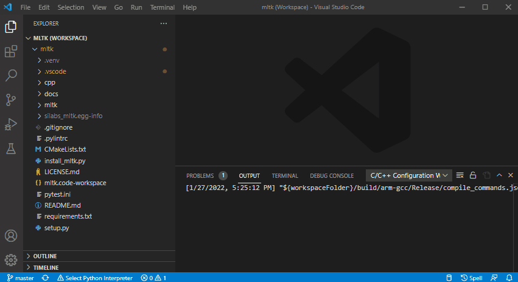
Build for Windows or Linux¶
Many of the MLTK applications support running on Windows/Linux or embedded targets.
The following describes how to build for Windows/Linux.
1) Optionally create file: user_options.cmake¶
Optionally create the file: <mltk repo root>/user_options.cmake
And add any build specific settings. Refer to the Build Options for more details on the available settings.
2) Select the CMake Kit¶
Based on your host OS, select one of the following CMake kits:
MLTK-Windows-GCCMLTK-Linux-GCC
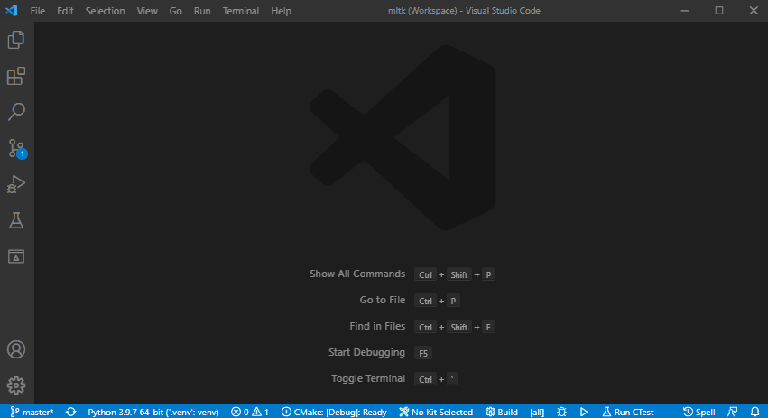
3) Configure the CMake Project¶
Configure the CMake project (this may take awhile):
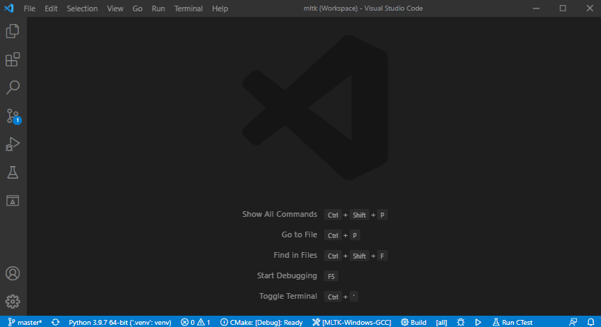
4) Select the build type and build target¶
Select the CMake build type, the build target, then build the application.
In this example, we build the mltk_hello_world application in release mode:
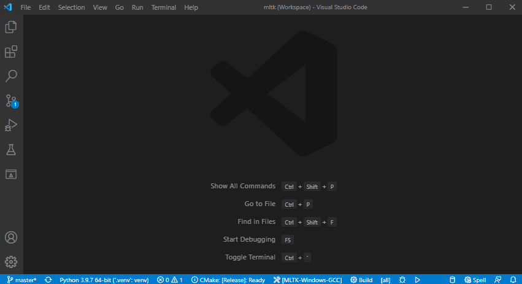
5) Build and run application¶
This shows how to:
Build as release
Run the
mltk_hello_worldapplication:
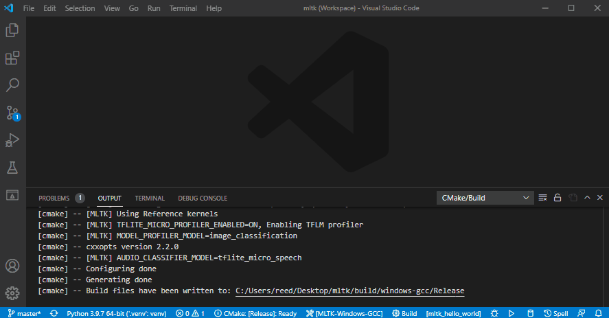
6) Or debug application¶
Alternatively, you can build as debug and single-step debug the application.
This shows how to:
Set a breakpoint
Build as debug
Debug the
mltk_model_profilerapplication
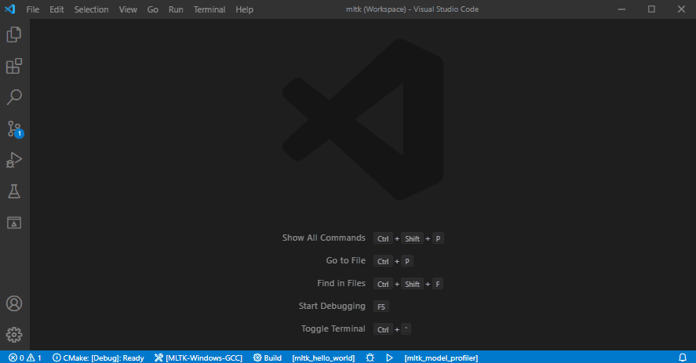
Build for embedded¶
The MLTK also supports building and running/debugging applications on supported development boards.
0) Configure Serial Terminal¶
A serial terminal is needed to view the logs generated by the development board.
The Serial Monitor VScode extension is recommended.
Another options for Windows is TeraTerm which is a free serial terminal.
First, connect your dev board via USB.
Then, open the serial terminal program and select the COM Port that has a description
similar to: J-Link CDC Uart and set the Speed (aka BAUD Rate) to 115200:
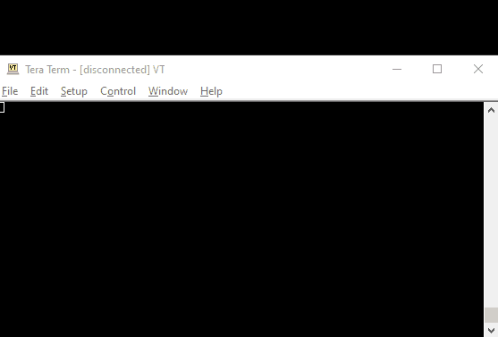
1) Create file: user_options.cmake¶
Create the file: <mltk repo root>/user_options.cmake
And add the following to it:
mltk_set(MLTK_PLATFORM_NAME brd2601)
This creates a CMake variable and tells the build system to use the brd2601 platform.
Refer to Supported Hardware for more details.
NOTE: If this variable is not defined, then the host operating system (e.g. windows or linux) is automatically selected.
Refer to the Build Options for more details on the available settings.
2) Select the MLTK-ARM-GCC CMake Kit¶
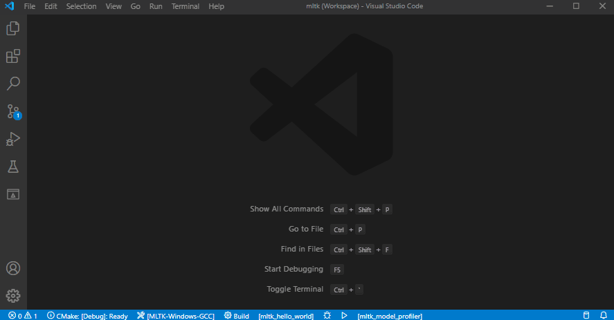
3) Configure the CMake Project¶
Configure the CMake project (this may take awhile):
4) Select the build type and build target¶
Select the CMake build type, the build target, then build the application.
In this example, we build the mltk_hello_world application in release mode:
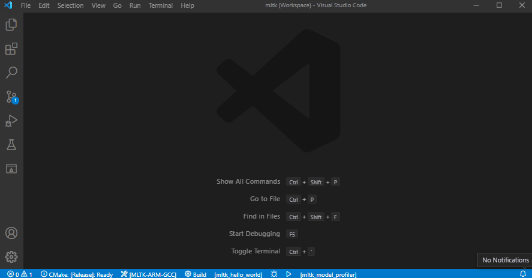
5) Build, download, and run application¶
The hello_world MLTK application has several “targets”:
mltk_hello_world- Build the applicationmltk_hello_world_download- Build the application and download it to the development boardmltk_hello_world_download_run- Build the application, download it to the development board, view the serial output of the appmltk_hello_world_reset- Reset the development board
Other applications have similar targets, e.g.:
mltk_model_profilermltk_model_profiler_downloadmltk_model_profiler_download_runmltk_model_profiler_reset
NOTES:
A supported development board must be connected via USB
You must have Segger J-Link installed (see the Install Tools section) and also a serial terminal to view the logs generated by the development board.
This shows how to:
Build as release
Download to the embedded development board
Run the
mltk_hello_worldapplication
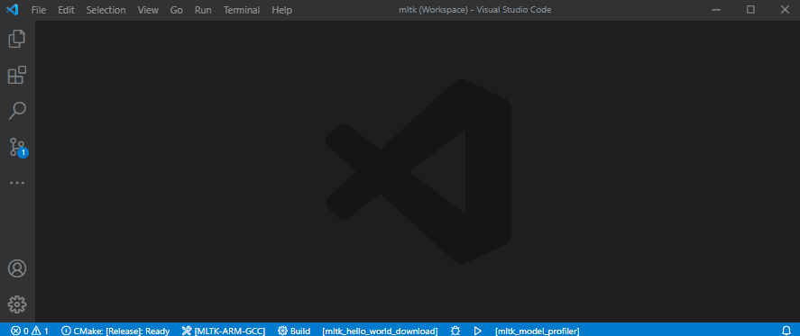
6) Build, download, and debug application¶
NOTES:
A supported development board must be connected via USB
You must have Segger J-Link installed (see the Install Tools section) and also a serial terminal to view the logs generated by the development board.
This shows how to:
Build as debug
Set a breakpoint
Download to the embedded development board
Debug the
mltk_model_profilerapplication
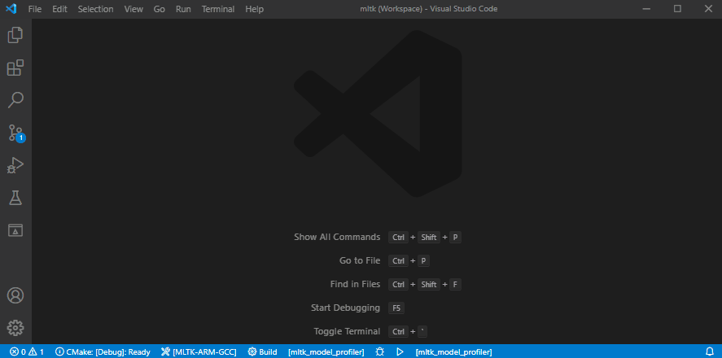
Example Applications¶
Refer to the Examples documentation for more details about the applications that come with the MLTK.
Python Wrappers¶
Refer to the Python wrappers documentation for more details about the wrappers that come with the MLTK.